Write a query for each of these tasks:
- Retrieve customer information (all fields) where customer_id is 20
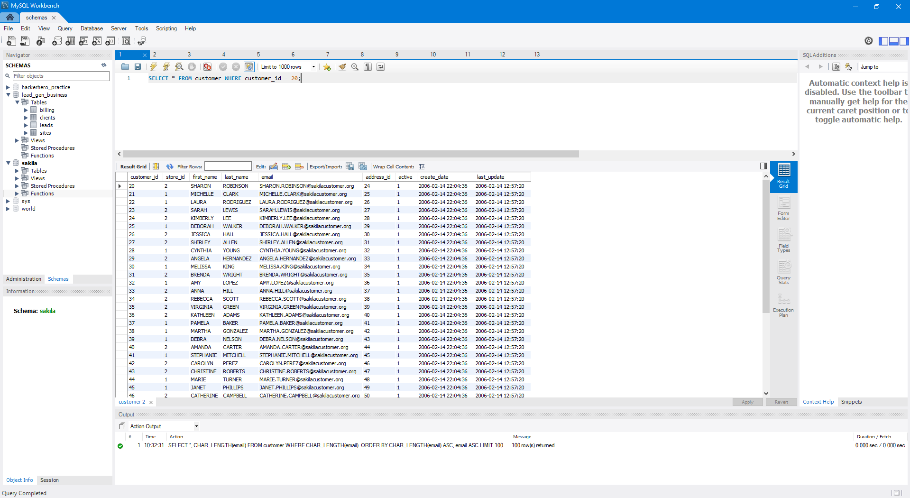
- Retrieve customer information (all fields) where customer_id is BETWEEN 20 and 60
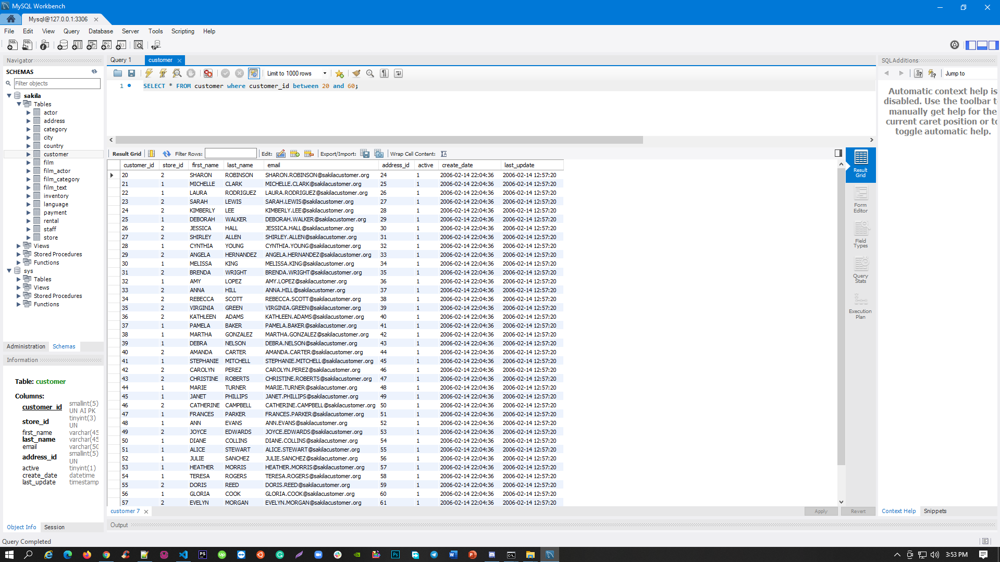
- Retrieve customer information (all fields) WHERE first_name starts with L
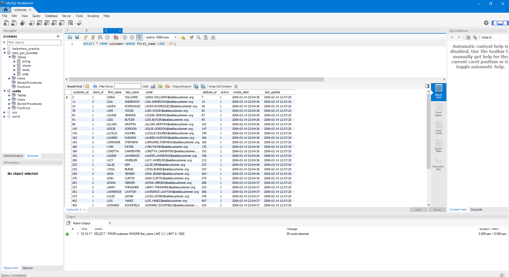
- Retrieve customer information (all fields) WHERE first_name includes L.
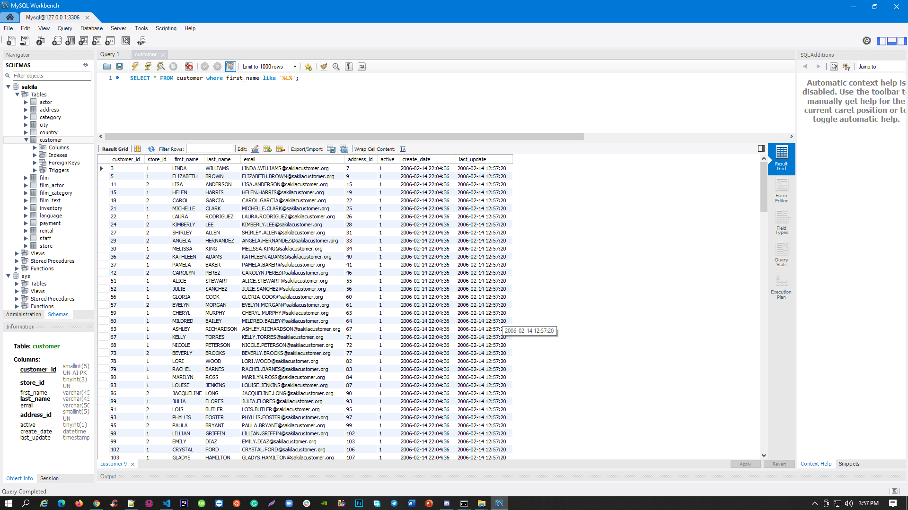
- Retrieve customer information (all fields) WHERE first_name ends with L
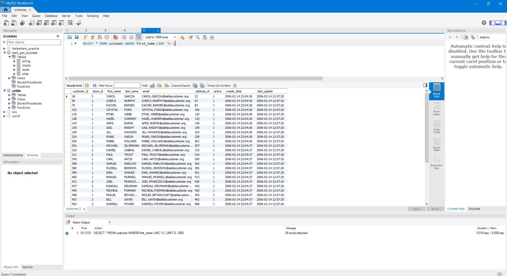
- Retrieve customer information (all fields) WHERE last_name starts with C and have the results be shown, starting with
the record where it was created most recently.
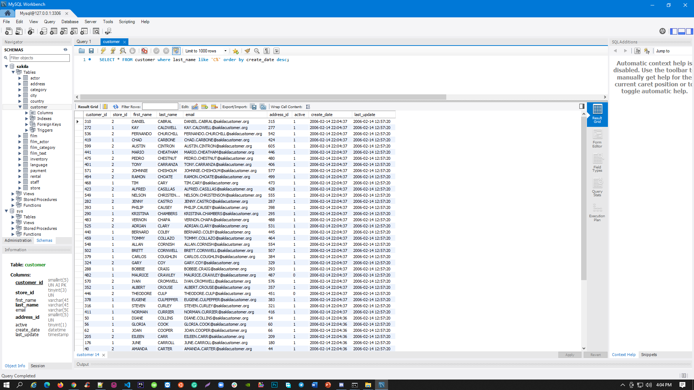
- Retrieve customer information (all fields) WHERE last_name includes NN. Only have it retrieve the top 5 records, where
the first record shown is the oldest customer (in terms of the create_date)
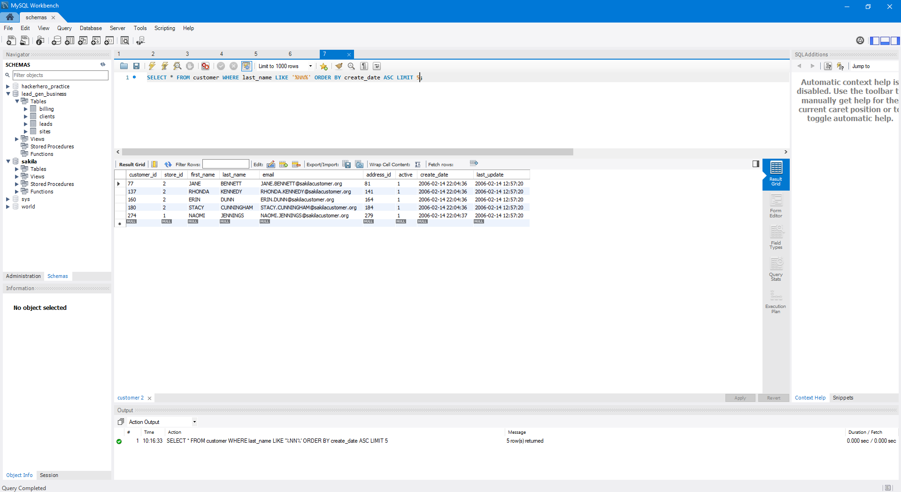
- Retrieve customer information (customer_id, first_name, last_name, and email address only) for customers with the
following customer_id 515, 181, 582, 503, 29, 85.
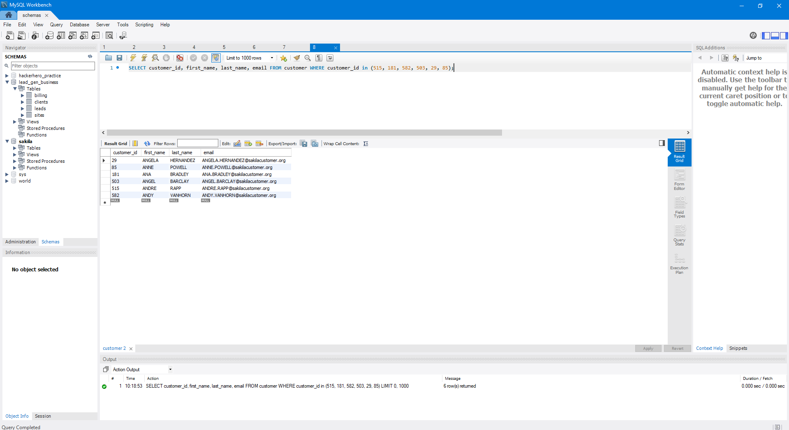
- Retrieve customer information where store_id is 2. Now when displaying the columns, instead of the column name be
'email', have it appear as 'email_address'.

- Retrieve customer information (only the first_name, last_name, and email) but order the result with the email address in
the DESC order.
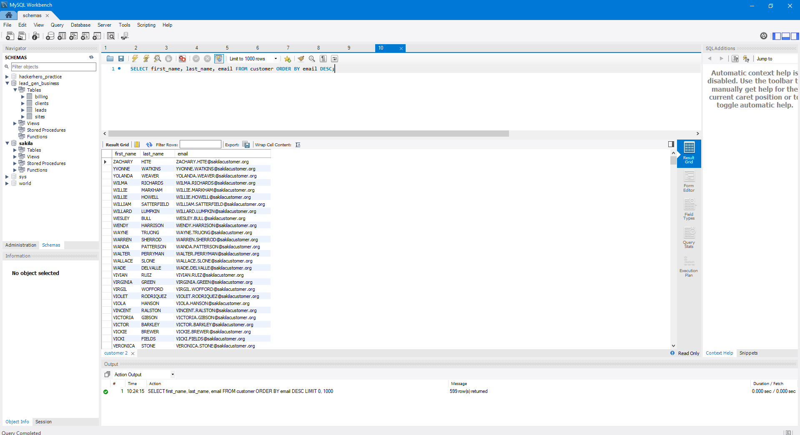
- Retrieve only 'active' customer information (only the customer_id, first_name, last_name, and email) and where their
record was created in the month of February.
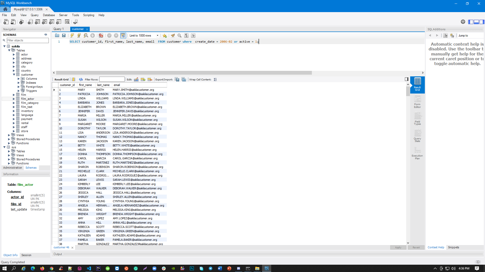
- Retrieve customer records (email field as well as email_length field) where the customer with the longest email address
is shown first. If customers have the same length of email address, order the list by the email field in the ASC order
(meaning it shows email address that starts with 'A' first).
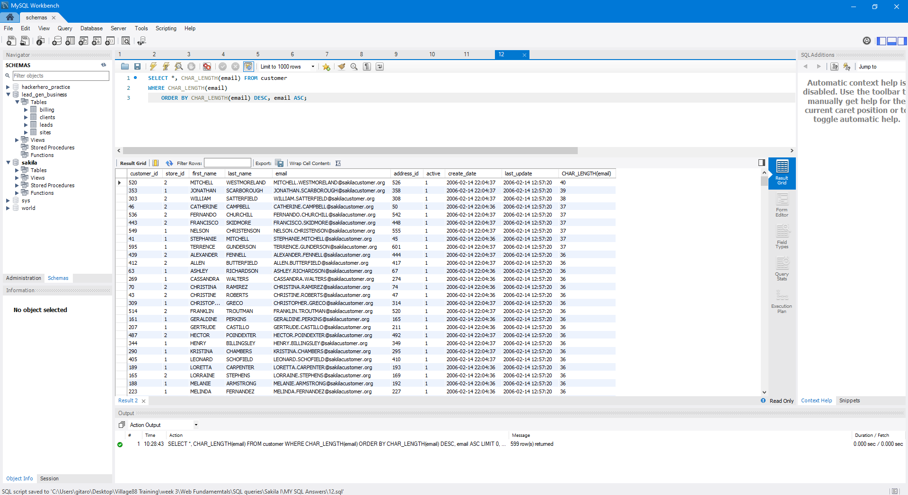
- Now retrieve top 100 customer records with the shortest email address.
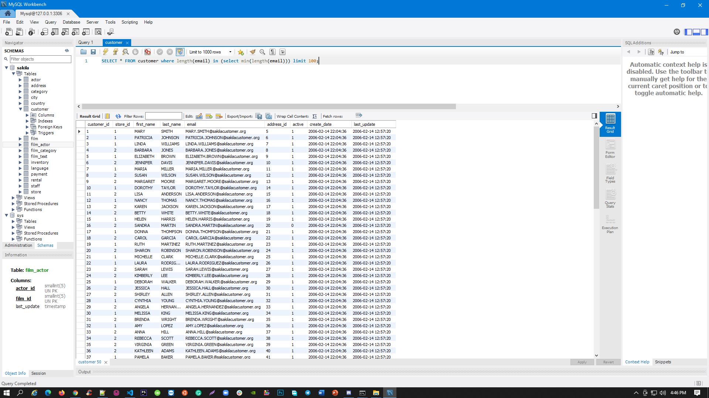